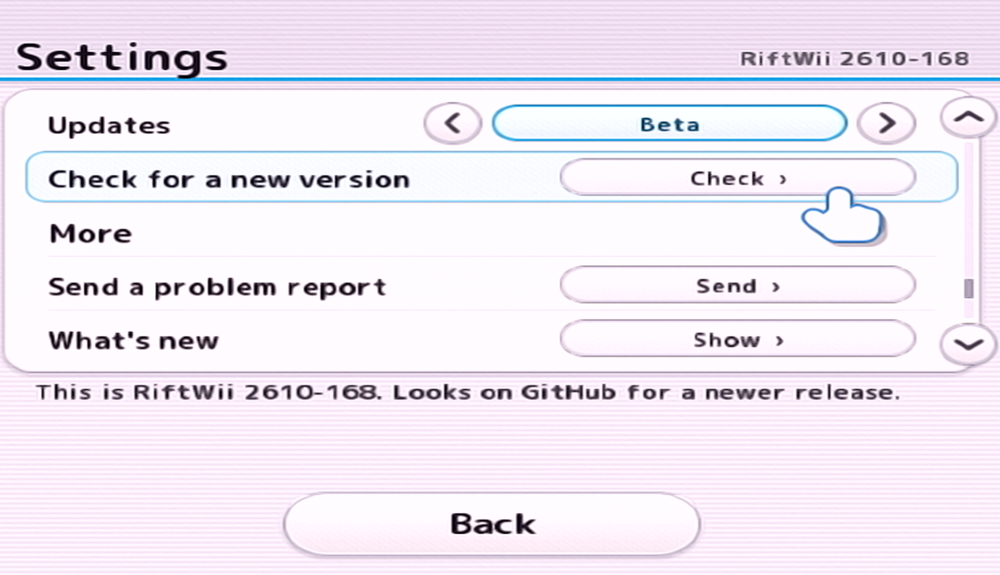

Running on an Old Version?
Here's how you can easily update RiftWii
With RiftWii
If your Wii has an internet connection, you can easily update by going to Setting > Updates, and check for a new version, whether that be the Beta, or Stable version. After that, click Check for a new version, and you're all set!

With PC
If you don't have internet, you can easily update by just following the initial install instructions right here:
Installing RiftWii